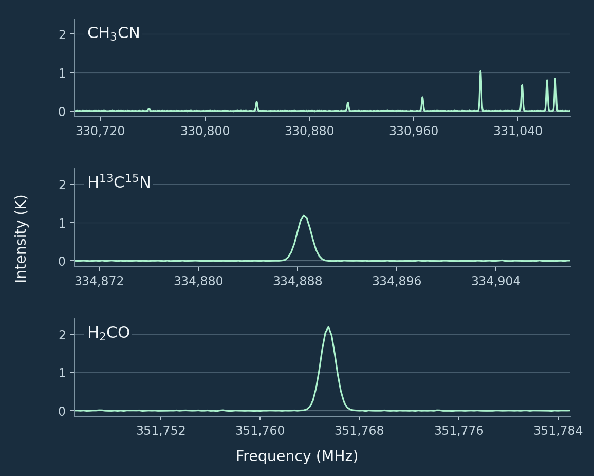

Fit a molecular spectrum
Start with a synthetic spectrum whose carriers we already know. Then bring your own spectrum, choose which catalogs Astro AMASE can search, and inspect the fit in your browser.
The guide works offline. The standard notebook setup and initial catalog preparation use the internet from your Colab CPU runtime.

Quick start
Keep the synthetic defaults for this pass. At 140 K and 2.7 km/s, the Draft 02 general fit recovered all ten injected peaks locally and on a standard Colab CPU. Eight were assigned to CH3CN, one to H13C15N, and one to H2CO.
Upload the notebook to Colab
Sign in to Colab and choose File → Upload notebook. Select the downloaded
.ipynb. Under Runtime → Change runtime type, select CPU under Hardware accelerator.Set up Python and prepare the catalogs
Run step 1 to install the isolated CPU environment. Then run step 2 with Draft 02 general and Public archive to runtime. The first catalog preparation transfers about 1.13 GB from Zenodo before retries and checks for 2.5 GB of free runtime disk. In one fresh Colab CPU session that transfer took 14.2 minutes, and assembling the database took another 54 seconds. Keep several GB available for working copies and results.
Preview and fit the synthetic spectrum
Run step 3 with Synthetic example. Keep Use synthetic reference settings selected in step 4, then run step 5. The reference settings include a 1.2 km/s linewidth and 0.004 K RMS noise.
Inspect and save the fit
Run step 6 to view the results, then step 7 to save the ZIP. If the browser download does not open, select Files, open the run folder printed in step 7, and choose Download from the ZIP’s menu. Save the ZIP before closing the runtime. Read the tables and repeat a fit.
Try a larger synthetic spectrum
In step 3, choose the 8,192-channel or 138,016-channel synthetic trial and rerun steps 3–7. Both simulate the same three species on new frequency grids and use the same fit settings when the reference option is selected. Keep the three native CDMS entries 030501, 041505, and 029512 eligible for these trials. The ten-peak reference count is specific to the 1,843-channel example. The larger trials exercise workload size, and their Colab performance is still under review.
Use your own spectrum
Step 3 checks the text and frequency order. You supply the units and observation settings.
Download the example spectrum (.txt)Prepare two columns
Use plain text with no header. Put frequency in MHz first and intensity in K second, separated by spaces or a tab. Use strictly increasing frequencies. Convert GHz or Jy/beam to the required units before uploading, using the appropriate brightness conversion for your data. The preview may show fewer points for a large file. The fit uses all channels.
330700.000000 -0.005702490
330700.250000 -0.002924239
330700.500000 -0.002570426Choose Upload a spectrum or File in the runtime. For local Jupyter, use the file option and select Existing local Python in step 1. Give the path to an existing Python 3.12 Astro AMASE environment, and make sure the notebook kernel has pandas and matplotlib. To use a Google Drive file in Colab, mount Drive and give the file’s runtime path.
Match the settings to the observation
In step 4, set the source diameter and observing geometry. Supply the dish diameter for single-dish data or both beam axes for interferometric data. These values affect the simulated brightness. Use 1e20 arcsec for a beam-filling source.
A fixed velocity relative to the local standard of rest (VLSR) requires a fixed excitation temperature. To estimate velocity, clear the fixed velocity field, enter search bounds, and choose whether to fix or estimate temperature. The draft has limited validation for automatic estimates.
Set the linewidth, the RMS noise, and the peak threshold in units of that noise. Blank linewidth or RMS fields request estimates. A fitting iteration limit of 0 runs until convergence.
Advanced fit settings
Step 4 also offers the continuum temperature, column-density bounds, and structural scoring. The default element list is C, O, H, N, and S. A candidate with an element outside the list receives half its global score.
When estimating velocity, you can supply a JSON list of exact active catalog labels as tracers. The known-molecules field takes a JSON list of SMILES for species established independently in the source. For example, ["C"] represents methane. That prior changes scoring, and the catalog still competes for assignments.
Choose eligible catalogs
The catalog scope determines which transitions the fit can consider. An assignment is a candidate interpretation of the observed lines. A detection needs scientific evidence beyond catalog eligibility and a fitted match.
Start with a draft edition
- Draft 02 general
- The default has 333 catalog objects for 231 identities. The selection starts with securely detected interstellar or circumstellar species, plus explicitly detected isotopologues. Each object covers a specific set of states or transitions. Some catalog mappings and state coverage remain under review. Glycolaldehyde and methyl formate, for example, are on catalog holds.
- Draft 02 PILS band
- Adds 11 catalogs for a total of 344. Every input channel must lie within 329,150.112845–362,899.138030 MHz. These additions were tested against an excerpt from the Protostellar Interferometric Line Survey.
- Draft 01
- The earlier 295-object comparison scope is selectable in step 2.
The repaired JPL catalog objects in Draft 02 were validated over 9.375–300 K. Use that range for a fixed excitation temperature. The notebook checks the pinned catalog version when using a compatible ZIP already in the runtime or at a direct HTTPS address. The default fetches verified catalog source files directly into the runtime.
Add or replace a catalog
Use Look up CDMS and JPL catalogs to search the inventory. The lookup includes the reasons an entry is on hold. Fourteen reviewed catalogs can be added individually. Enter their database and tag in Add native keys, separated by commas. For example, CDMS:017503 makes ground-state CH3D eligible.
Read the entry’s limits and conflicts before changing the scope. To try the alternative C3S catalog JPL:068001, enter CDMS:068503 in Exclude native keys. Eleven optional catalogs are restricted to the reviewed PILS band. The notebook checks the resulting frequency and temperature limits.
For a new line list, supply a metadata JSON file and either an Einstein A CSV or a supported fixed-width SPCAT .cat file. Match the partition function, energy zero, states, and statistical weights to the line list. The table must cover 300 K for line ranking and each modeling temperature. Give the upload its own LOCAL tag and label. Exclude the original entry when replacing an active representation.
Try a new catalog with a matching spectrum
Download the practice catalog and spectrum and extract the ZIP. These files describe a fictional CO-like linear rotor with invented constants. They demonstrate how an upload enters the analysis.
- In step 2, select Draft 02 general and upload
metadata.jsonandtransitions.csvas one new catalog. Leave the native additions and exclusions empty. - In step 3, upload
spectrum.txt. Its 3,400 rows use MHz and kelvin. - In step 4, choose Spectroscopy only, interferometric observations, a 0.5″ × 0.5″ beam and a 0.5″ source. Use 80 K, fixed velocity +2.7 km/s, linewidth 1.2 km/s, continuum 2.7 K, RMS 0.004 K, and a 10σ threshold. Set the column-density range to 10¹⁰–10¹⁷ cm⁻² and leave the fitting iteration limit at zero.
- Run steps 5–7. The local trial assigned five peaks to Example linear rotor and recovered 3.95 × 10¹³ cm⁻² from 4.00 × 10¹³ cm⁻² injected. Running the same fit without the uploaded catalog left all five peaks unidentified.
Read and repeat a fit
Compare the fitted curve with the input, then check which catalog supplies each line and which peaks are still unidentified. Look for expected lines that are missing, blends with plausible alternatives, and fitted columns that reach a bound.
results/fit_spectrum.html- Interactive plot. Extract the ZIP and open this file in a browser, including offline.
results/final_peak_results.csv- Peak frequencies and assignments, including unidentified peaks.
results/column_density_results.csv- Fitted column densities in cm−2. The
results/individual_contributions/folder shows individual models and residuals. active_catalogs.csvandrequested_parameters.json- The entries eligible for the fit and the requested settings. The archive also contains the exact input, effective settings, code and environment details, and catalog provenance.
Repeat a saved run
Extract the archive. Run step 2 again with the same catalog edition, native additions, and exclusions. Restore the saved uploaded_catalogs/ folder when present. In step 3, select the saved spectrum.txt, then give the extracted archive’s path in step 4’s saved_settings_folder. The notebook verifies the spectrum, engine, catalog scope, and recorded settings before starting a new fit in step 5.
Clear notebook outputs before sharing a copy that used private data. The results ZIP includes the uploaded spectrum and original line-list texts, so share that ZIP only with people who may receive those files.
Troubleshooting
Colab’s available resources and session lifetime vary. Save completed results while the runtime is connected. Colab resource and sharing FAQ.
Setup or catalog preparation stopped
For setup errors, run Download setup diagnostics if step 1 reached its diagnostics folder. For a catalog transfer error, rerun step 2 in the same runtime to reuse verified files and segments. For a ZIP mismatch, check that the file matches the edition selected in step 2.
The fit rejected the spectrum or settings
Check the frequency and intensity units, strictly increasing channel order, and absence of a header. If any channel is outside the PILS limits, switch to the general edition. Check the fixed-temperature range and switch to spectroscopy-only scoring if your upload needs it.
I changed an input or lost the runtime
After changing catalogs, run steps 2–5. After changing the spectrum, run steps 3–5. After editing fit settings, rerun steps 4–5. Then run steps 6 and 7 for the new fit. If Colab starts a new runtime, begin again at step 1 and use the saved ZIP to restore your inputs and settings.
The plot is blank or a run stopped
For a completed fit, use step 7 to download the ZIP and open results/fit_spectrum.html directly. For an interrupted fit, inspect the cell error and the log printed in step 5. For review, record the edition, failed step, and error or relevant log excerpt after removing private data and paths.